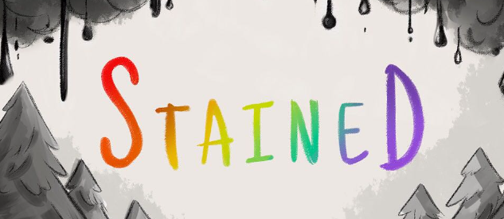

TRABAJO ESCRITO
Una colección de guiones e historias que demuestran mis habilidades narrativas.
Guiones
Tengo una lista de participaciones en algunos proyectos, como Lotus Flower, Blame Through Mirrors, Stained, entre otros

Historias
He escrito muchas historias cortas, que suelen acomodarse alrededor de un tema en especifico, como el apego emocional, o la infidelidad